Inventarmodelle
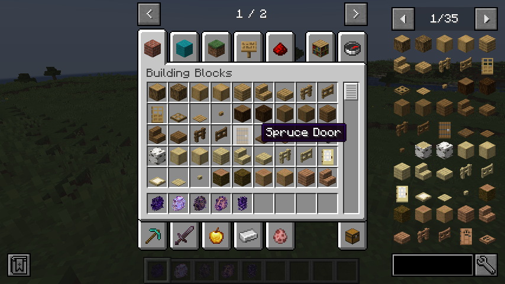
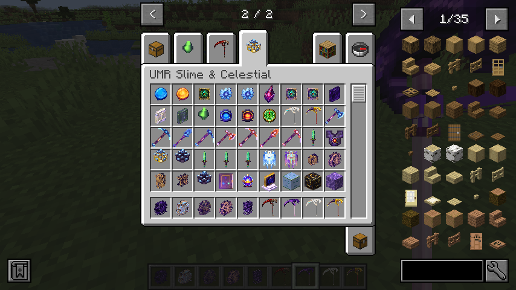
True Void
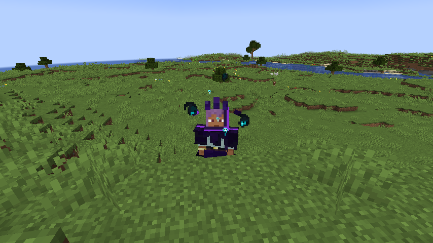
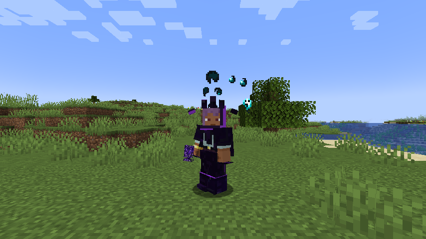
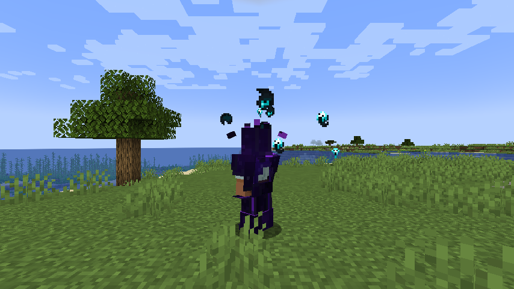
True Celestial
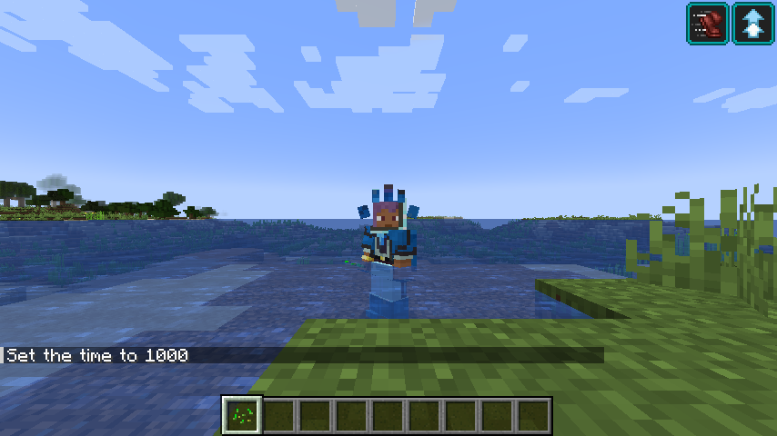
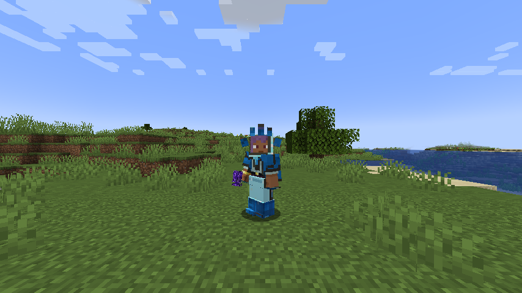
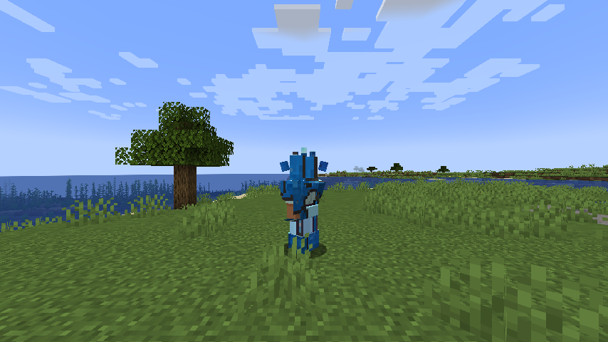
True Living
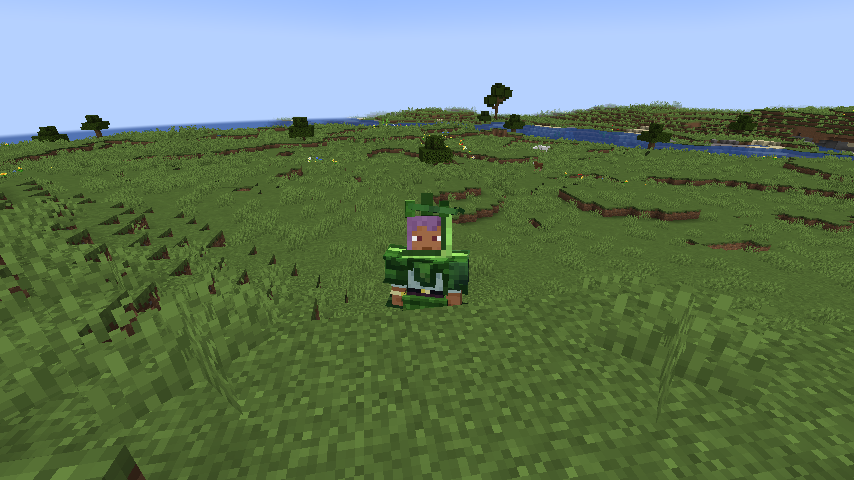
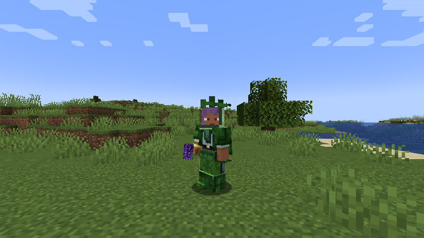
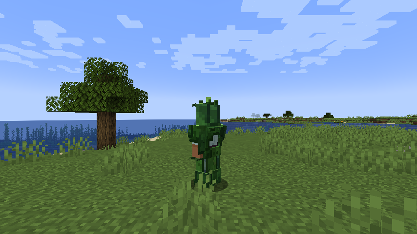
Armor of Balance
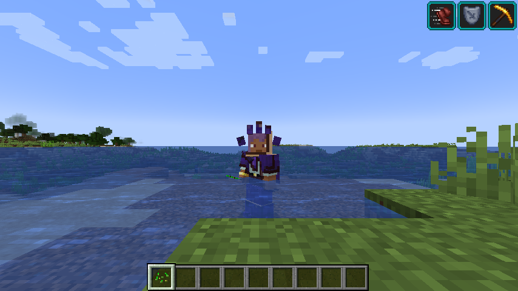
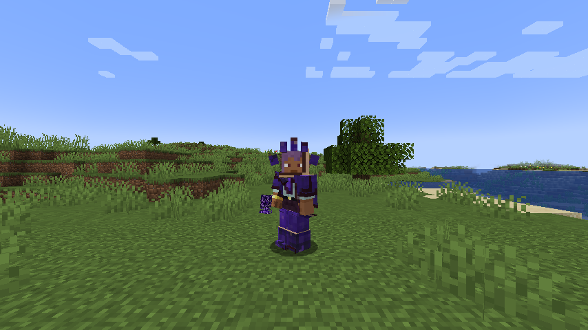
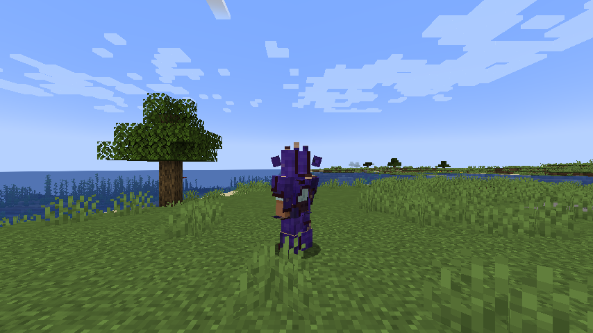
Corrupted Crystal Leggings
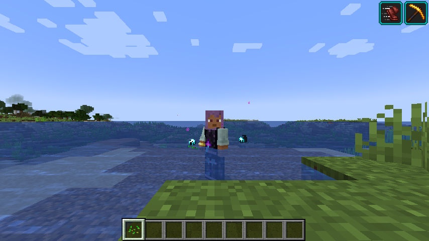
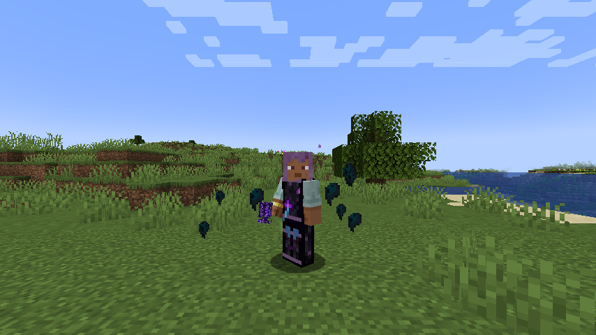
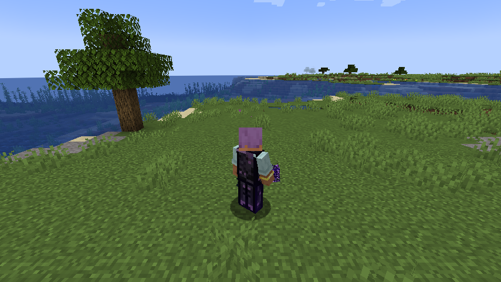
Corrupted Silverfish – Laufabnahme
Im echten Client bestätigt: Das Tier lief mit aktiver KI in einer unsichtbar eingefassten Testfläche auf den Spieler zu. Die beiden Live-Seitenbilder wurden im selben aktiven Fenster rund 0,4 Sekunden auseinander aufgenommen und zeigen die wechselnden, gegenläufigen Dreiergruppen. Alle sechs Beine bleiben am Körper; es gibt keinen sichtbaren Boden- oder Körperschnitt.
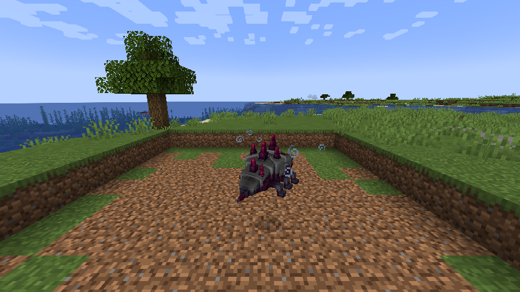
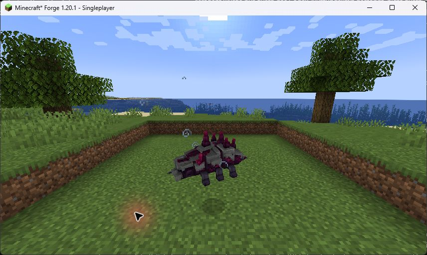